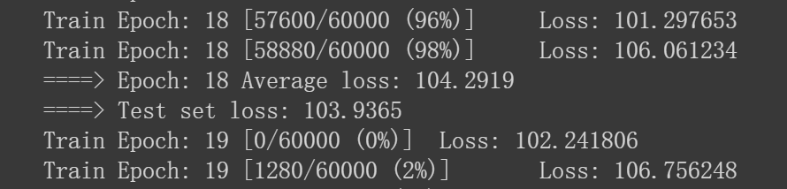

Vae他有一些烦恼
反正现在的年轻人
都有许多烦恼
那么多要思考
那么多要寻找
诱惑太多 不坚定就犯错了
哦哦，不对，不是这个Vae，也不是uae~
是接下来出场的VAE~
对比AE，引出VAE
之前介绍了自编码器(AE)的原理(传送门)，当时讲到自编码器并不具有真正的生成能力，以图像为例来说，它只能将输入的图像$X$编码成隐向量$z$，然后将$z$作为解码器的输入，得到输出图像$X’$。如果我们尝试将与$z$的shape一致的”随机特征表示”输入解码器，那么得到的将是毫无意义的噪声图像。
变分自编码器(VAE)突破了这一限制！
先给出结论：在VAE中，只要随机特征表示（这里也将这些特征表示记作$z$）是从某些分布，如标准正态分布中采样得到的，那么将$z$输入解码器之后可以得到与训练集图像类似但不同于训练集中任何一张图像的新图像。
比如，训练集是手写数字图像，那么在训练完成后，将从标准正态分布中采样得到的$z$输入解码器，可以得到一些新的手写数字图像。
以上所说的特征表示$z$，被称为隐向量(latent vector)。
VAE究竟是如何做到这一点的呢？且往下看。
VAE的结构

变分自编码器由两部分组成：编码器和解码器。
上图中，从输入$X’$到$z$之间的部分(绿色)是编码器，从$z$到输出$X’$之间的部分(蓝色)是解码器。
变分自编码器的解码器部分和自编码器相似，但编码器部分是有差异的。具体来说，变分自编码器的编码器并不是直接将输入$X$映射到$z$，而是先将$X$映射为一组组的(均值，标准差)，然后由一组组的(均值，标准差)变换得到$z$的各个分量，并组合得到最终的$z$。
上面说的变换，具体来说是$z=\mu +\sigma * \epsilon$，其中的$\mu$和$\sigma$代表均值和标准差，由编码器拟合得到，不需要我们手动去解。$\epsilon$是服从标准正态分布的。
你可能会疑惑，为什么有这么一个变换操作？
原因在于，”采样”这个动作是不可导的，从而无法使用反向传播算法去优化，而变换后得到的$z$是可导的。
这样一来，我们只需从标准正态分布中采样$\epsilon$，然后经过变换$z=\mu +\sigma * \epsilon$得到服从均值为$\mu$，标准差为$\sigma$的正态分布的$z$，再把$z$输入解码器，就能得到期待的输出结果了。
这被称为重参数技巧。
当然，我们也可以直接从标准正态分布中采样一个隐向量$z$，然后输入解码器，得到输出，这就是VAE所谓的生成能力。
损失函数
损失函数有二。
其一为解码器输出的$X’$与编码器的输入$X$之间的相似程度，这里用重构损失来衡量，重构损失使用交叉熵；
其二为编码器拟合+变换得到的$z$的分布与标准正态分布之间的距离，这里用KL散度来度量两个分布之间的差异，越小代表分布间差异越小。
我们希望$X$与$X’$之间越相似越好，也就是重构损失越小越好；同样，我们希望$z$的分布越接近标准正态分布越好，也就是两者之间的KL散度越小越好。
于是最终的损失函数定义为两者的重构损失与KL散度之和。
使用Pytorch写一个VAE
首先导入相关库：
1 | import torch |
准备数据集，这里还是使用手写数字数据集，设定训练集的batch_size=128，测试集的batch_size=32
1 | transform = torchvision.transforms.Compose([torchvision.transforms.ToTensor()]) |
设置常用的一些参数：
1 | device = torch.device("cuda" if torch.cuda.is_available() else "cpu") |
搭建VAE网络：
1 | class VAE(nn.Module): |
定义损失函数：
1 | def loss_function(recon_x, x, mu, logvar): |
定义训练函数
1 | def train(epoch): |
定义测试函数
1 | def test(epoch): |
最后定义主函数入口：
1 | if __name__ == "__main__": |

训练20个epoch，每一个epoch都会产生一张重构图像和一张生成的新图像。以上主函数代码运行完成之后，就得到了20张重构图像与20张生成图像，如下：
这里展示最后一个epoch对应的图像。
重构图像：
生成图像：
重构图像已经基本能够还原原始图像，只是有些许模糊。
生成图像是训练集中不存在的图像，虽然这些生成图像相比于真实图像来说还有些差距，但基本能够看出手写数字的轮廓，这说明训练的变分自编码器(VAE)已经学习到了训练集的分布，具备了生成新图像的能力。
参考：